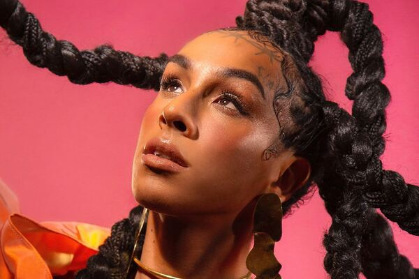
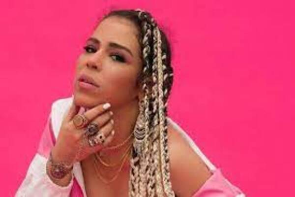
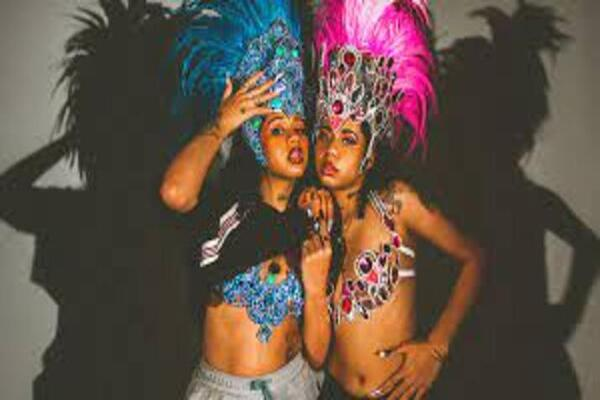

Linn da Quebrada
Linn da Quebrada é uma artista LGBTQIA+ com uma história de mais de 30 anos para contar. Lina Pereira dos Santos nasceu dia 18 de julho de 1990, na Zona Leste da cidade de São Paulo (SP).
Além de cantora, é compositora, atriz e, claro, uma ativista social de extrema importância.
Como ela mesmo disse, ela é uma grande exceção. “A grande maioria das travestis não tem a possibilidade de trabalhar, de atuar, de ter dignidade na sociedade”. Linn da Quebrada vai contra a corrente do sistema.
Leia mais...Audio Sample
Flora Matos
Flora Matos é uma cantora brasileira de rap. Ela nasceu em Brasília em 18 de novembro de 1988.
Aos 4 anos de idade, ela já subia aos palcos com o grupo de seu pai, Renato Matos1. Aos 13 anos, ela começou a frequentar bailes de rap1.
Em 2006, aos 17 anos, Flora Matos se apresentou como MC ao lado de DJ Brother e recebeu o prêmio de melhor cantora do ano em Brasília2. Em 2007, ela gravou o remix da música "Véu da noite" da cantora Céu, produzido por Dj Kl Jay, e se mudou para São Paulo.
Leia mais...Audio Sample
Tasha e Tracie
As gêmeas Tasha e Tracie Okereke ganham cada dia mais destaque na cena do rap nacional unindo rimas que enaltecem a mulher negra e moda em um movimento afrofuturista.
Criadoras do blog “Expensive $hit”, elas trabalham com a arte e a informação para a valorização da autoestima e da autonomia dos jovens das periferias.
Nascidas na Zona Norte de São Paulo, as duas são filhas de mãe brasileira e pai nigeriano. A entrada na cena musical aconteceu em 2019, quando colocaram suas rimas para fora e ocuparam espaço na cultura rap paulista.
Leia mais...Audio Sample
Negra Li

Nascida no bairro da Brasilândia, Quando adolescente, imitava Whitney Houston, foi a partir desse momento que passou a ouvir mais a black music.
Negra Li iniciou sua carreira musical com o grupo de rap RZO, permanecendo com eles entre 1996 e 2004.
Em 2005 lançou seu primeiro álbum solo em parceria com o rapper Helião. Em 2006, estrelou o filme de Tata Amaral, Antônia, que, no ano seguinte, virou um seriado homônimo na TV Globo.
Leia mais...Audio Sample